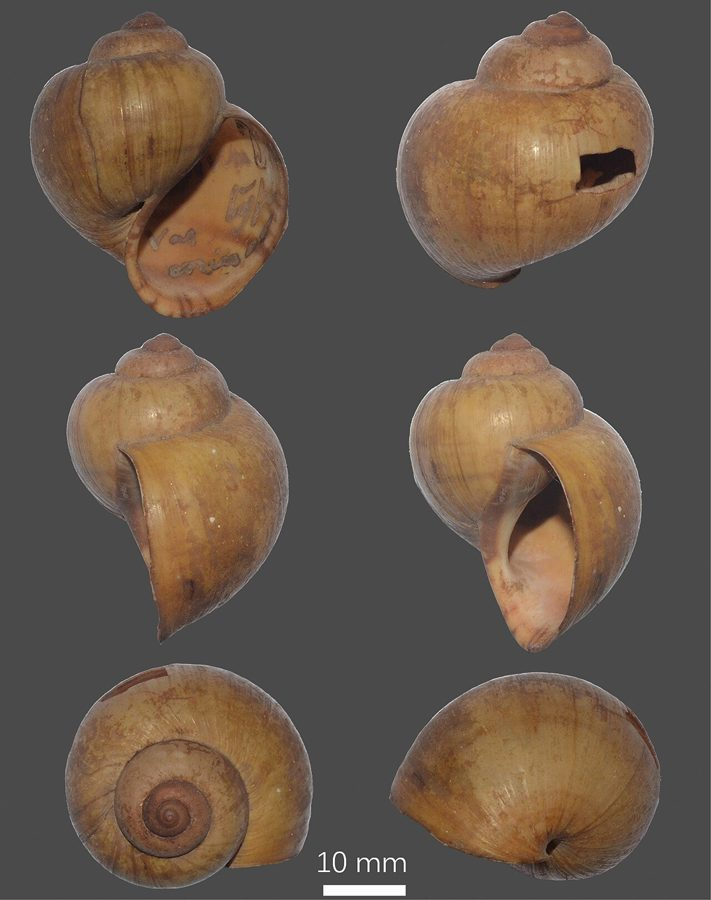

घोंघाFreshwater Apple Snail
Pila globosa · Ampullariidae · MOL-0001

- Scientific name
- Pila globosa (Swainson, 1822)
- Family
- Ampullariidae
- Hindi
- घोंघा / सेब घोंघा
- Status here
- native
- IUCN
- not evaluated
When to look कब देखें
Expected mainly in June, July, August, September, October, November.
Freshwater Apple Snail / Indian Apple Snail
Pila globosa (Swainson, 1822) — Ampullariidae
घोंघा — पूर्वी UP का सबसे परिचित जलीय शंखधारी है। हर गाँव के तालाब में मिलता है, हर बच्चे को पहचानता है। बाहर से हरी-भूरी गोल खोल, अंदर से चमकदार। मछुआरे समुदाय इसे खाते हैं और पान का चूना इसकी जली हुई खोल से बनता है। हर घंटे यह पानी साफ करता है — गाँव के तालाब का सबसे सस्ता, सबसे ज़रूरी, सबसे अनदेखा जीव।
Quick Identification त्वरित पहचान
| Feature | Description |
|---|---|
| Shell | Large, round (globose); diameter 5–8 cm; heavier than it looks |
| Shell colour | Greenish-olive to dark brown; banded in some individuals |
| Operculum | Hard, horny, oval lid that seals shell opening — very diagnostic |
| Siphon | Long fleshy tube extended to water surface in low-oxygen water |
| Eggs | Pink-orange clusters of round eggs, each 3–4 mm, laid above waterline |
| Body | Grey-black with yellowish mottling; large muscular foot; eyes on short stalks |
Field rule: Large round globose shell (5–8 cm) + horny operculum + orange-pink egg masses above waterline + siphon tube at water surface = Pila globosa. Nothing else in UP ponds matches all these features together.
Morphology आकारिकी
| Feature | Measurement |
|---|---|
| Shell diameter | 5–8 cm (up to 10 cm in large individuals) |
| Shell height | 5–8 cm |
| Siphon extension | 5–8 cm above water surface |
| Egg diameter | 3–4 mm per egg; 50–300 eggs per mass |
Shell: Globose (round); shell thin relative to size; greenish-olive to dark brown; often with 3–4 faint spiral bands. Aperture (opening) large and oval. Umbilicus (navel-hole at the base) present — visible when shell is turned over.
Operculum: Hard, semi-transparent, oval; attaches to the foot. When the animal retracts into the shell, the operculum seals the aperture tightly, protecting from desiccation and predators. Aestivating individuals can remain sealed for months.
Body: Soft-bodied. Head with a pair of long, slender tentacles and shorter eye-stalks. Foot large, muscular, used for movement. Skin grey to yellowish-black with irregular mottling.
Respiratory system: Dual — both a gill (for underwater breathing) and a pulmonary sac (lung-like cavity) for air breathing. The siphon, formed from the mantle edge, can extend 5–8 cm above the water surface.
Eggs: Deposited in clusters above the waterline — 50–300 eggs per mass, pink-orange, each 3–4 mm diameter. Eggs are calcareous (calcified shell) protecting them from aquatic predators but not from terrestrial ones.
Ecological Role पारिस्थितिक भूमिका
Feeding: Herbivore-detritivore. Grazes on algae (benthic algae, filamentous algae on submerged surfaces), aquatic macrophytes (leaves and stems of water plants), dead plant matter and detritus at the pond bottom. Does NOT significantly damage healthy standing rice — this distinguishes native Pila globosa from the invasive Pomacea canaliculata (South American apple snail), which is a major rice pest wherever introduced.
Position in food web:
- Feeds on: algae, aquatic plants, detritus
- Predated by: Asian Openbill Stork, Indian Pond Heron (fry and small snails), smooth-coated otter, monitor lizard, humans (some communities)
Water quality role: Pila globosa tolerates moderate pollution but declines in heavily polluted or pesticide-contaminated water. Its presence in reasonable numbers indicates a functioning freshwater ecosystem. Its absence from ponds that previously hosted it is a warning signal.
In paddy ecosystems: During monsoon flooding, snails move into paddy fields where they graze on algae and decomposing plant material — playing a minor role in nutrient cycling.
Life Cycle / Phenology जीवन चक्र
| Month | Event |
|---|---|
| Dec–May | Aestivation — snails burrow 10–20 cm into the wet bottom mud or hide under debris, seal the operculum, and drop their metabolism; can survive 4–6 months sealed |
| June | Emergence with first monsoon rains; begin feeding and moving actively |
| Jun–Sep | Breeding — peak during warm monsoon weather |
| Year-round | Eggs laid above waterline; 12–15 day incubation; hatchlings drop directly into water |
Growth: Juveniles 5–10 mm at hatching; reach adult size in 6–12 months. Lifespan: 2–4 years.
Host Plants or Prey आहार
Primary food sources:
- Aquatic plants: soft leaves and stems of Hydrilla (Hydrilla verticillata), Water Fern (Azolla pinnata) and Indian Lotus (Nelumbo nucifera), plus the filamentous and benthic algae that coat submerged surfaces
- Detritus: decomposing leaf litter and organic silt at the pond bottom
- Not taken: healthy standing rice — unlike the invasive Pomacea canaliculata, this native snail does not damage paddy
हिंदी: हाइड्रिला, अज़ोला और कमल की नरम पत्तियाँ, तथा तालाब की तली का सड़ा हुआ कार्बनिक मलबा और शैवाल — यही इसका भोजन है। खड़ी धान की फसल को यह नुकसान नहीं पहुँचाता।
Predators / Natural Enemies शत्रु
- Asian Openbill (Anastomus oscitans): a specialised apple-snail predator. The gap in the middle of its bill grips the slippery shell while the bill tip cuts the snail's attachment muscle, and the body is pulled out with the shell left whole — a pile of empty, unbroken shells below a roost is its signature
- Indian Pond Heron: takes hatchlings and small snails in shallow water
- Smooth-coated otter and Bengal monitor lizard: crush or extract adults along marshes and canal banks
- Humans: collected for food by Nishad and other fishing communities
हिंदी: घोंघिल (एशियाई ओपनबिल) इसका सबसे बड़ा शिकारी है — इसकी चोंच के बीच का खाली हिस्सा घोंघे को पकड़ता है और मांस निकाल लेता है, खोल साबुत रह जाती है। बगुले छोटे घोंघे खाते हैं; ऊदबिलाव, गोह और मछुआरा समुदाय बड़े घोंघे लेते हैं।
Agricultural / Human Relevance कृषि एवं मानव उपयोग
Food use: Consumed by Nishad and other fishing communities in eastern UP. Typically boiled or roasted, then extracted from the shell. Shell meat is a protein source especially in lean seasons. Not widely consumed by upper-caste communities; deeply embedded in fishing community foodways.
Chuna (lime) source: Shell is approximately 95% calcium carbonate (CaCO₃). Traditional practice: collect empty shells, burn them in a simple kiln, slake the resulting calcium oxide with water → calcium hydroxide (chuna / slaked lime). This lime is used for paan (betel leaf) preparation. Also used in whitewashing walls.
Not a pest: Unlike the invasive South American apple snail (Pomacea canaliculata), which devastates rice crops wherever introduced (Southeast Asia, Japan), Pila globosa has coexisted with Indian rice farming for millennia without becoming a crop pest. Farmers generally ignore it.
Conservation concern: Pesticide use in paddy kills snail populations in treated fields. Drainage of seasonal wetlands removes aestivation sites. Local food collection pressure is low-level but continuous.
Expected Locally स्थानीय रूप से अपेक्षित
Not a field record. Written from published accounts for eastern Uttar Pradesh. No confirmed local sighting yet — if you have seen it, that is what the atlas needs.
अभी तक स्थानीय पुष्टि नहीं। यह विवरण प्रकाशित स्रोतों से है, किसी अवलोकन से नहीं।
In Basti district, apple snails are abundant in village ponds (talab) with undisturbed sandy-muddy margins. Egg masses — bright orange clusters on vegetation stems above the waterline — are the most visible indicator of population health and can be counted easily throughout monsoon. Local communities collect snails for food (particularly along canal banks) and empty shells are commonly used by lime-burning artisans. Pesticide drift from adjacent paddy fields is visible as sudden die-offs of snails along field-edge drainage channels.
Distribution वितरण
Global range: Indian subcontinent and Sri Lanka; the species is also widely distributed in Southeast Asia (Thailand, Malaysia, Bangladesh). Native throughout the major river systems of India.
In India: Found throughout the Indo-Gangetic plain and Deccan river systems. Present in most freshwater habitats from the Himalayan foothills to the coastal plains.
In Uttar Pradesh: Distributed across all districts wherever permanent and seasonal water bodies exist — ponds, lakes, rivers, canals, irrigation ditches.
In Basti district / eastern UP: Very common in village ponds and along the margins of Saryu, Rapti, and Kuwano rivers. Active June–November; aestivating in pond bottom mud December–May.
Research Questions शोध प्रश्न
- How many apple snails per square metre in your village pond? — Count snails in a marked 1 m² area in shallow water (30–50 cm depth); repeat monthly June–November.
- When do egg masses first appear in your area? — Record the date of first egg-mass sighting annually and compare with monsoon onset date.
- Do treated paddy fields have fewer snails than untreated fields? — Count snails in 5 treated vs. 5 untreated plots during flooding as a simple comparison.
- Is traditional shell-burning for chuna still practised in your village? — Survey older residents and document the process if still active.
- Do Asian Openbill Storks prefer larger snails? / क्या घोंघिल छोटे घोंघों की तुलना में बड़े घोंघों का शिकार अधिक करता है? — Collect the empty shells below a stork feeding spot and measure them against live snails from the same pond.
- Does the snail prefer Hydrilla or Azolla? / क्या घोंघा हाइड्रिला और अज़ोला में से किसी एक को ज़्यादा खाता है? — Offer both plants in a bucket of pond water and note which is eaten first.
Similar Species मिलती-जुलती प्रजातियाँ
| Species | How to distinguish | |
|---|---|---|
| Vivipara / Bellamya spp. (Freshwater Snail) | Much smaller (2–3 cm); more elongated (turreted) shell; no siphon; different habitat | |
| Pomacea canaliculata (Invasive Apple Snail) | Similar size but bright pink egg masses in tight round clusters; South American — not yet in UP | |
| [[red_rimmed_melania | Melanoides tuberculata]] (Red-rimmed Melania) | Much smaller (10–25 mm); narrow, pointed spiral shell; in silt-bottom ponds |
| [[freshwater_mussel | Lamellidens marginalis]] (Freshwater Mussel) | Two-valved, flat, dark brown shell with no spiral; a filter feeder buried in mud |
Taxonomy & Classification वर्गीकरण
Original description. Pila globosa was described by William John Swainson in 1822 as Ampullaria globosa in Philosophical Magazine, Vol. 61. The species was later placed in the genus Pila Röding, 1798. The genus name Pila refers to the round ball-like shape of the shell (pila = ball in Latin). The species epithet globosa also refers to this globose, spherical shape.
Subspecies. No subspecies are currently recognised; Pila globosa is treated as monotypic. However, some morphological variation in shell shape and size is noted across the Indian subcontinent, possibly representing geographically isolated populations.
Family and order placement. Belongs to the order Architaenioglossa, family Ampullariidae (apple snails). The family Ampullariidae contains approximately 9 genera and 120 species of freshwater gastropods distributed in tropical Asia, Africa, and the Americas. The genus Pila contains approximately 30 species, all confined to Asia and Africa.
Phylogenetic notes. Molecular phylogenetics confirms that Pila globosa belongs to the Old World clade of Ampullariidae, distinct from the New World Pomacea clade (which includes the invasive apple snails). The dual-breathing system (gill + lung) is ancestral in Ampullariidae, allowing exploitation of oxygen-poor tropical freshwater habitats.
IUCN status rationale. Pila globosa has not been formally assessed by the IUCN Red List. As a widespread species throughout the Indian subcontinent and associated freshwater habitats, it is not considered of conservation concern at a global level. However, local populations may be under pressure from pesticide use, habitat drainage, and collection.
Photo Gallery फोटो गैलरी
Atlas Connections संबंधित प्रजातियाँ
- FLR-0013 Water Hyacinth — shares pond habitat; hyacinth-covered ponds have lower dissolved oxygen, reducing snail activity
- FLR-0005 Indian Lotus — shares pond habitat; both prefer clean, un-degraded ponds; lotus ponds have healthy snail populations
- FSH-0001 Rohu — co-occurs in village ponds; both harvested from the same ponds
- FLR-0014 Paddy — enters paddy fields during monsoon flooding; grazes on algae alongside tadpoles and rohu fry
- Asian Openbill — the specialised predator of this snail; empty unbroken shells below a roost are its signature
- Hydrilla and Water Fern — main plant foods in village ponds
- Red-rimmed Melania — the small pointed snail found beside it; beginners confuse the two
References संदर्भ
- Swainson, W.J. (1822). Appendix to a memoir on the Ampullariae. Philosophical Magazine, 61: 183.
- Preston, H.B. (1915). The Fauna of British India, including Ceylon and Burma — Mollusca (Freshwater Gastropoda and Pelecypoda). Taylor and Francis, London.
- Subba Rao, N.V. (1989). Handbook: Freshwater Molluscs of India. Zoological Survey of India, Calcutta.
- Zoological Survey of India. Fauna of Uttar Pradesh — Mollusca. ZSI, Kolkata.
- GBIF Occurrence Data — Pila globosa, India (2026). GBIF taxon key: 5783757.
Source file: species/fauna/mollusks/apple_snail.md